Glynwood Lodging & Booking Information
Stay with us for the weekend! Meals, activities, and swimming included.
Glynwood farm has limited lodging onsite in three beautiful properties. Onsite guests will be invited to celebrate with us for drinks and dinner on Friday evening and will be provided with a fresh farm breakfast Saturday and Sunday mornings. Guests will have access to a family friendly farm tour and swimming with us Saturday prior to the ceremony. Guests will also have access to hiking trails from the farm. Onsite parking is available.
Rooms will be booked on a first come first serve basis. If you are selecting a shared room or a room with a shared bath we will do our best to place you with someone you know and contact you directly to confirm that arrangements are suitable.
Lodging is available in three houses, all of which are walkable to the reception.
Perkins House (main house): A 1920s fieldstone house that looks out over the hillside and mountains beyond. Morning breakfast for all guests will be served in the dining room of the Perkins House. Rooms range from private rooms with shared baths, private rooms with private attached and detached baths, to two shared rooms.
The Farmhouse: a 1700s Farmhouse, with a full kitchen, living room, and 6 bedrooms, which range from private rooms with private attached or detached baths, plus one bedroom which includes a twin bed.
Appledore Cottage: This quaint cottage has three bedrooms and can accommodate up to eight guests. The cottage has a private kitchen and two bathrooms.
Reserve a room
All rooms are free of tax. Contact AJ (andrewjasonadams@gmail.com) directly to book and pay. All rooms sleep 2 unless otherwise listed.
- Private Room with attached private bath. $250 a night. [5 remaining]
- Private Room with detached private bath. $225 a night. [2 remaining]
- Private Room with shared bath (shared with one other room). $200 a night. [7 remaining]
- Shared Room with bath. $145 a night per bed (two beds, let us know if you wish to reserve the whole room) [6 beds remaining]
- Private Room with attached private bath and additional twin bed. $275 a night. [1 remaining]
Photos of The Perkins House Rooms
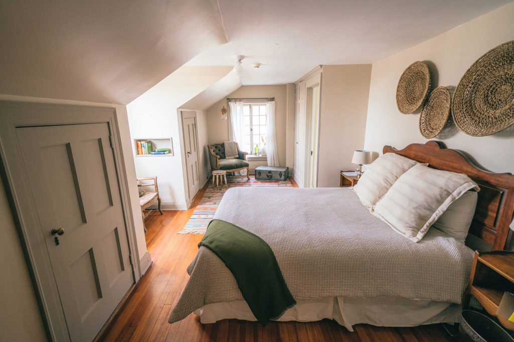 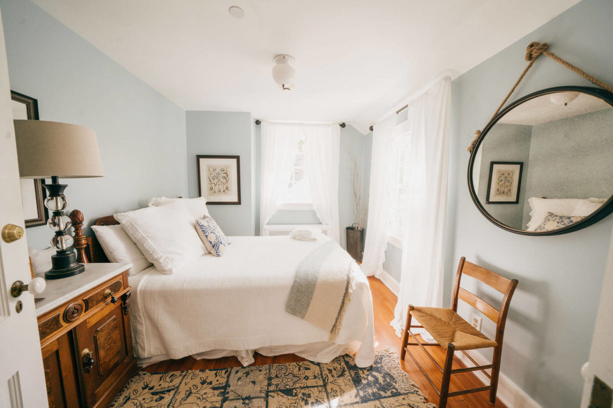 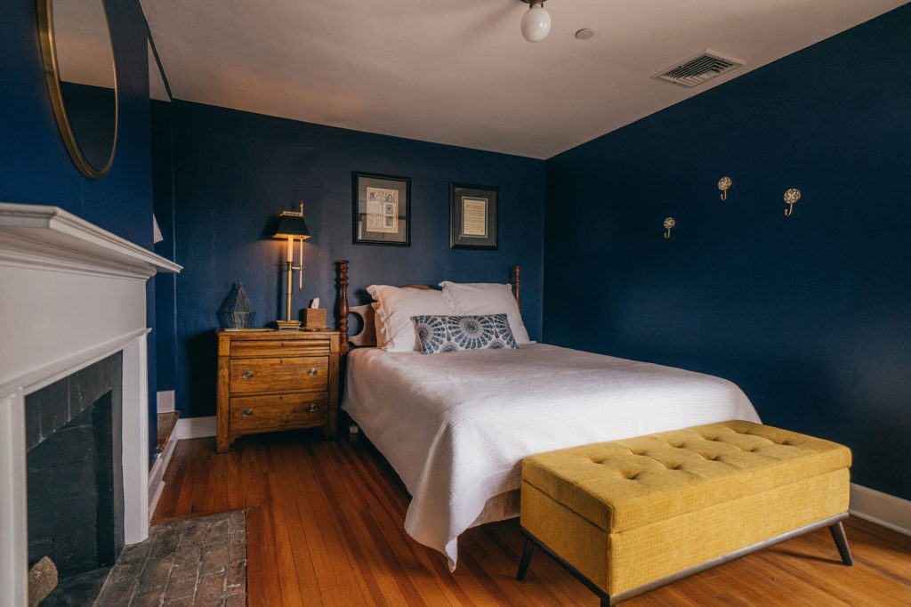 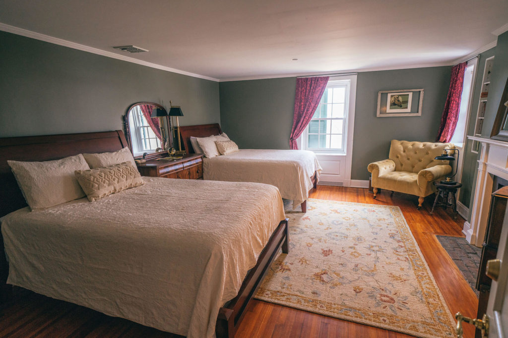 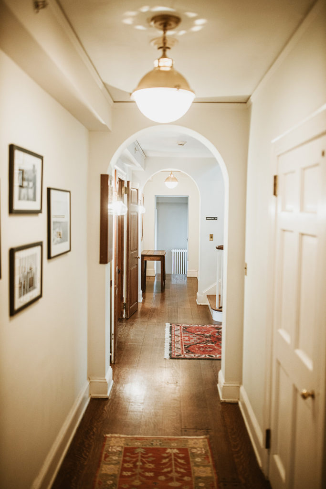Photos of rooms at The Farmhouse
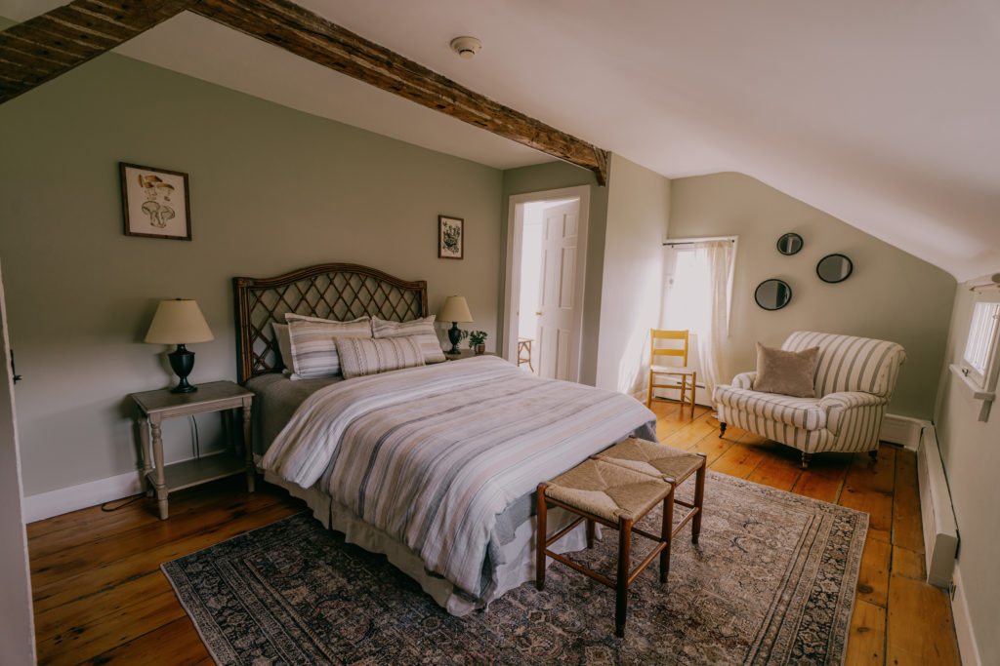 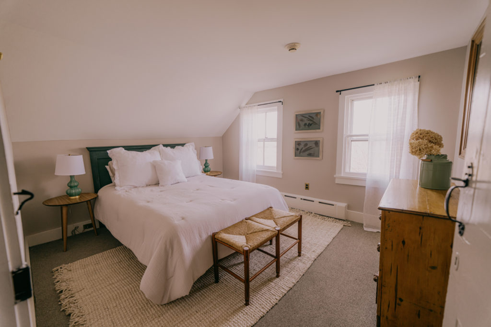 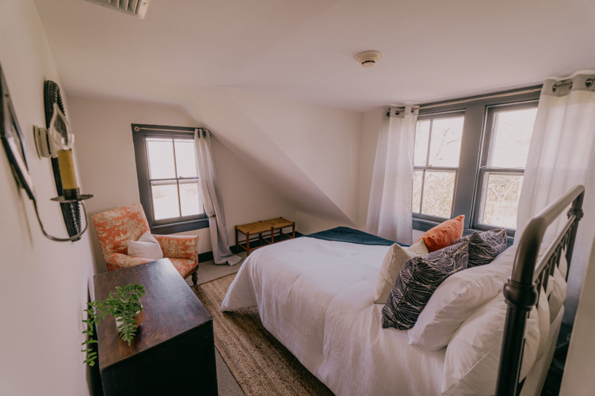 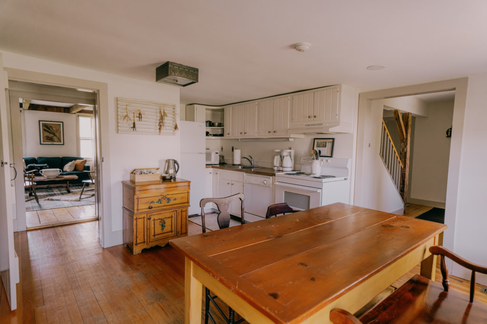 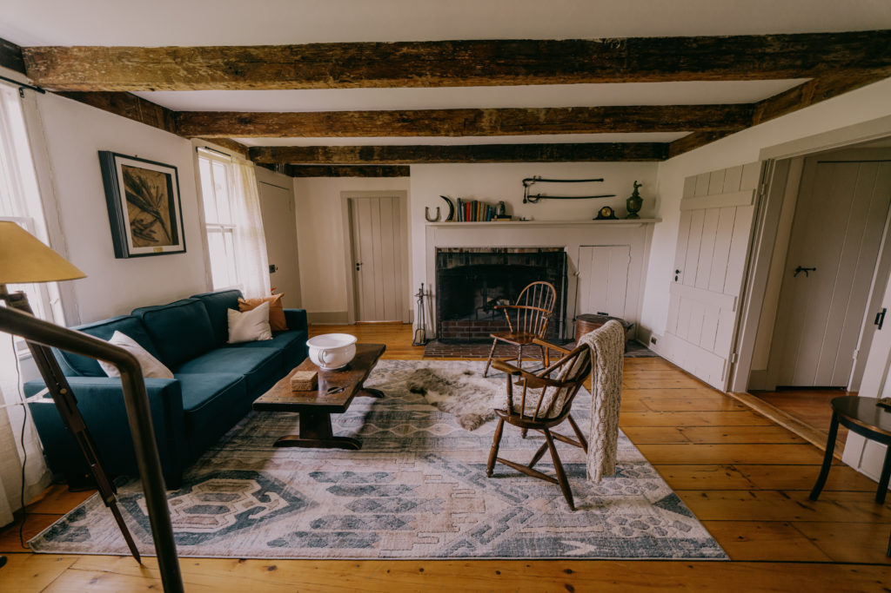Photos of the cottage
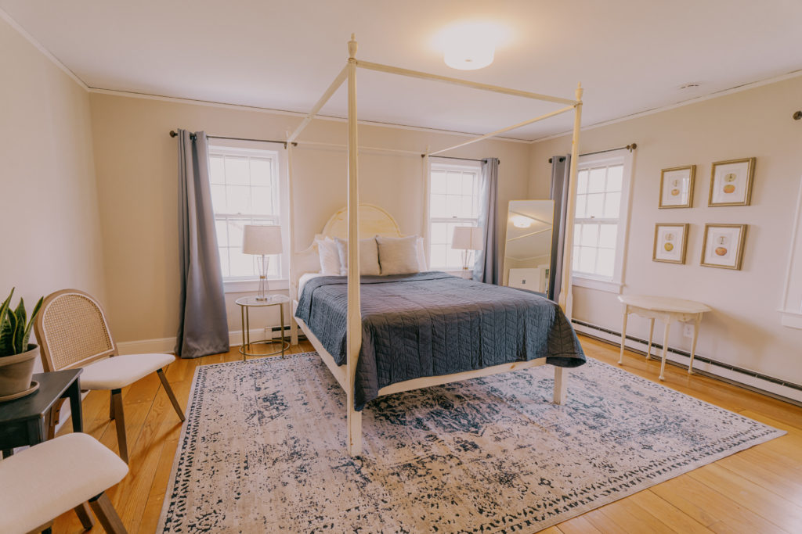 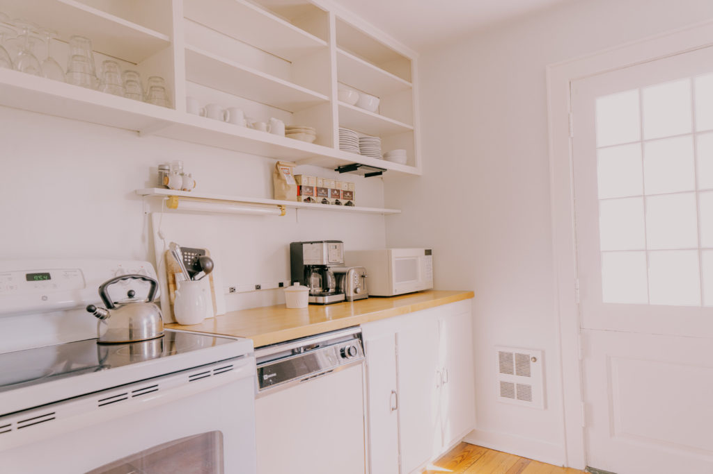 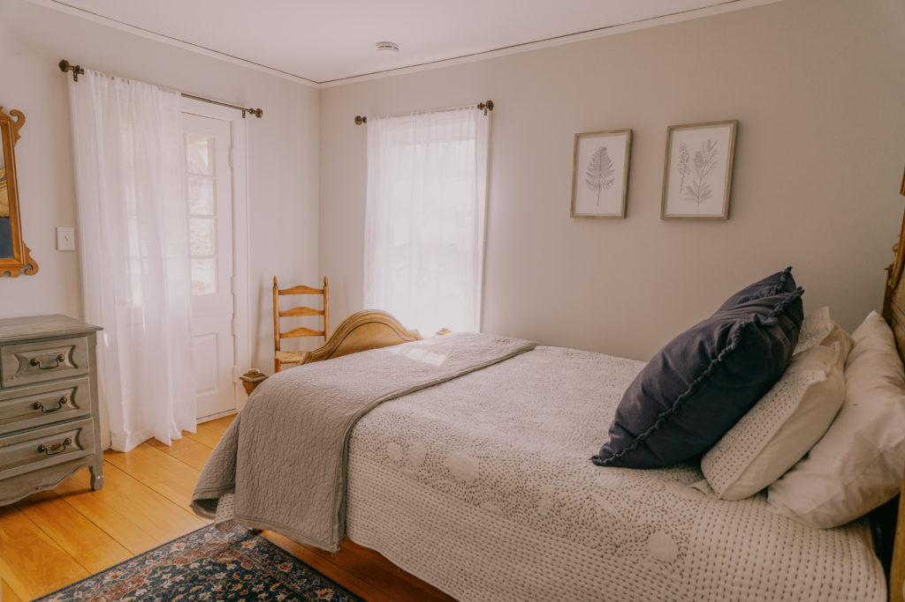 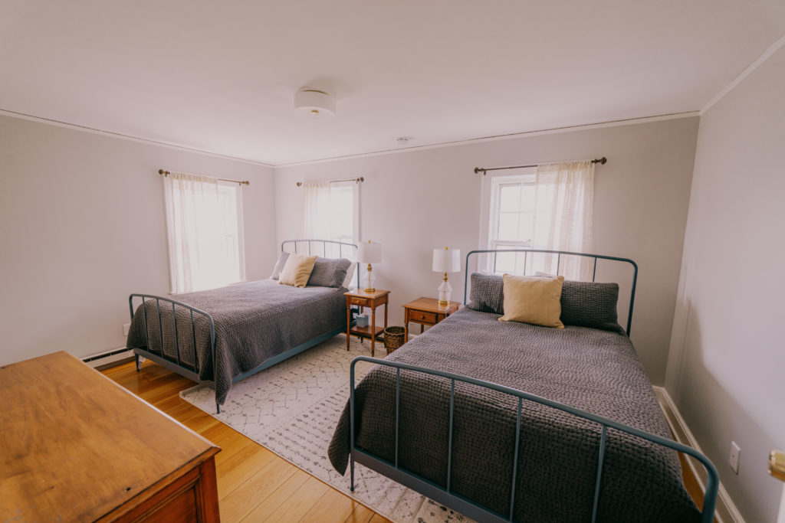Off Site Lodging
Due to capacity limitations, offsite guests are invited to the ceremony and reception Saturday night, but will not attend Friday and Saturday day-time festivities. Transportation will not be provided.
Various hotel chains located in Fishkill, NY, about 25 minutes away.